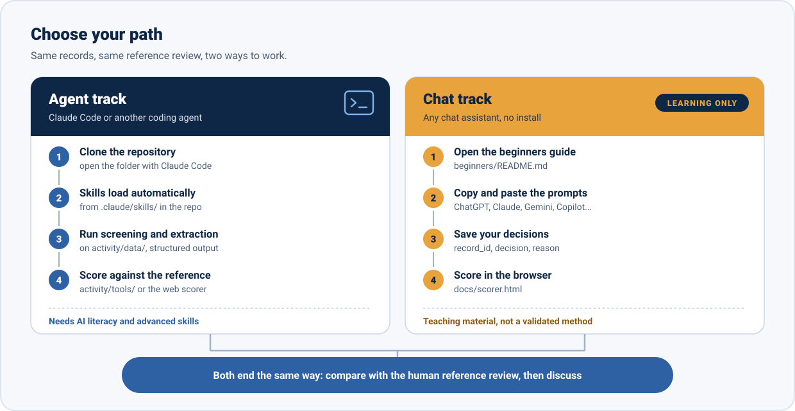
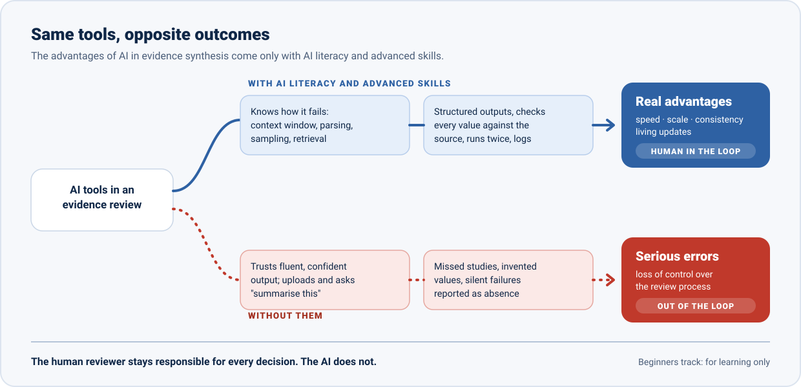

AI for evidence synthesis
Building skills in using AI tools to support evidence reviews for effective public health strategies. Hands-on materials from the EUPHA Digital Health and Artificial Intelligence Section.
AI can assist at every step. A human checks every step.
Workshop materials
Open the guide first. Everything else is linked from it.
Hands-on activity
The 30-minute group exercise: screening and data extraction with AI, compared with a review conducted without AI.
Open the guide →AI beginners track
A copy-and-paste walkthrough for any chat assistant. for learning only
Start here if you are new to AI →Records for your chat
The records to screen, in batches of up to 20, ready to copy into a chat. Missing abstracts come from PubMed.
Copy a batch →Prompt library
Prompts for chat assistants, by review stage: question and criteria, search, screening, extraction, verification, reporting.
Browse the prompts →Claude Code skills
Seven agent skills that load automatically when you open the repository with Claude Code, and can be adapted to other agents.
See the skills →Score your results
Confusion matrix, sensitivity, specificity, precision and missed includes, plus extraction accuracy. Runs in your browser.
Open the scorer →Two ways to take part
Same records, same reference review. Pick the track that matches the tools you use.


Agent track: Claude Code and other coding agents
git clone https://github.com/fraba94/eph2026-ai-for-evidence-synthesis
cd eph2026-ai-for-evidence-synthesis
claudeThe skills in .claude/skills/ load automatically; AGENTS.md gives the same rules to other agents. For people with AI literacy and advanced skills.
Chat track: any chat assistant
ChatGPT, Claude, Gemini, Copilot, Mistral or another assistant: no installation. Follow the beginners guide, copy the records from this page, then score in the scorer.
for learning only
The advantages come only with the skills
AI can bring real advantages to evidence synthesis (speed, scale, consistency, living updates), but only for people with AI literacy and advanced skills. Whoever does not understand how these systems work risks serious errors and losing control of the process, ending up out of the loop. Human reviewers stay responsible.


For learning only. These prompts are teaching material for this workshop. They are not a validated method. If you are not confident with how large language models work (context windows, parsing, sampling, retrieval, hallucination) and with advanced techniques (structured outputs, verification against the source, reproducibility checks, documentation of model and version), do not use AI to conduct a real evidence review. You stay responsible for every decision: the AI does not.

Further guidance: Position statement on AI use in evidence synthesis across Cochrane, the Campbell Collaboration, JBI and the Collaboration for Environmental Evidence (2025) · RAISE: Responsible use of AI in evidence SynthEsis.
60 minutes, four parts
- 10MIN
Expert discussion
Limitations first, with Patrick Boudreau (about 5 min), then benefits, with Francesco Baglivo (about 5 min).
- 10MIN
Demo
Selected open-access AI tools for evidence reviews.
- 30MIN
Small-group exercise
Screening and data extraction with AI, compared with a review conducted without AI.
- 10MIN
Structured discussion
Performance, transparency, bias and human oversight.
Hand hygiene and healthcare-associated infections
The question is deliberately uncontroversial, so the focus stays on the AI method: how effective are hand hygiene interventions in preventing healthcare-associated infections?
The reference standard is a published systematic review on hand hygiene and healthcare-associated infections, screened, extracted and synthesised by human reviewers without AI. You screen a set of its records and extract data with AI, then compare your results with the human decisions and discuss where and why they differ.
The choice of reference review is provisional: details and limits in activity/data/README.md. The extraction reference values were prepared by the workshop team from the full texts and cross-checked with the review's own tables. Eligibility criteria and steps are in the activity guide.
Learning objectives
- Apply AI tools to screening and data extraction within a structured review workflow.
- Compare AI-assisted outputs with manual results and identify discrepancies.
- Critically assess risks, limitations and appropriate use of AI in evidence synthesis.
Who is behind the session
Organised by the EUPHA Digital Health and Artificial Intelligence (DHAI) Section with:
Laura Maaß
EUPHA Digital Health and Artificial Intelligence Section
Patrick Boudreau
Montreal Behavioural Medicine Centre, Concordia University
Francesco Baglivo
University of Pisa
Abstract
Eur J Public Health 2026;36(Suppl 5):ckag169.470. Read it on the journal website.
Cite these materials
Use the CITATION.cff file, or the "Cite this repository" button on GitHub.